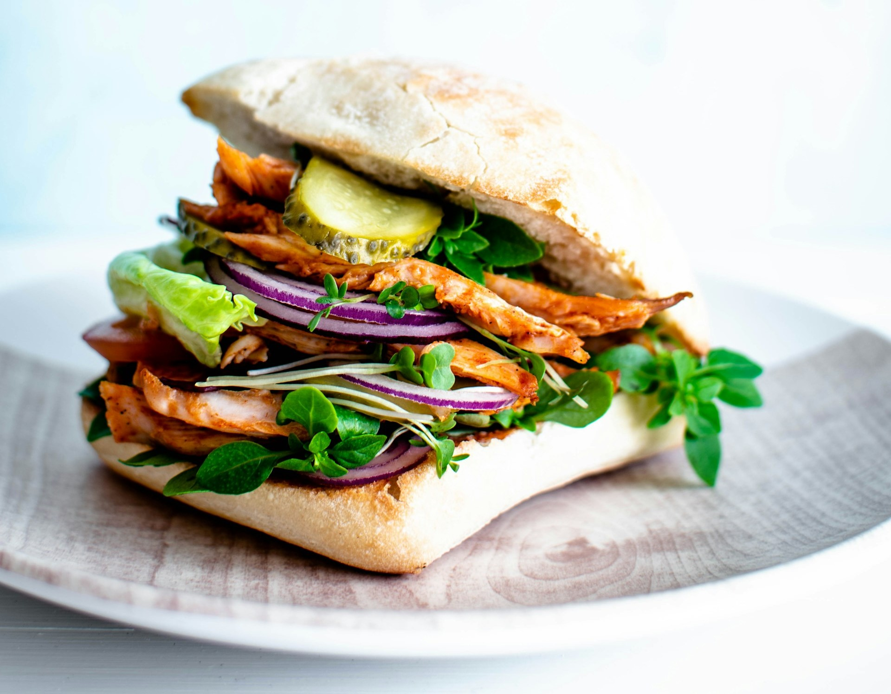

Egg Sandwitch

- 2 Eggs
- 4 tablespoon mustered oil
- 1 onion
- 1 capsium
- 1 tomato
- 5 garlic cloves
- 2 chille
- half tablespoon of ginger
- 4-5 bread slices
- 2 tablespoon chicken masala
- half tablespoon garam masala
Instructions